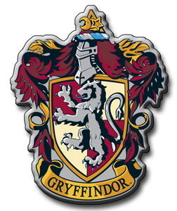
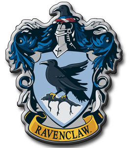
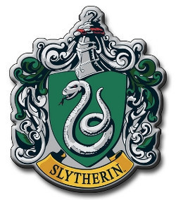
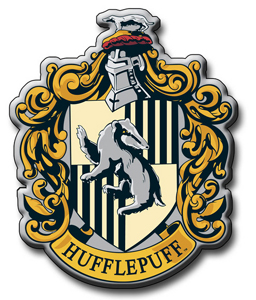

| GRYFFINDOR | RAVENCLAW | SLYTHERIN | HUFFLEPUFF |
|  | Gryffindor values courage, bravery, loyalty, nerve and chivalry. Its mascot is the lion, and its colours are scarlet and gold. The Head of this house is the Transfiguration teacher, Minerva McGonagall, and the house ghost is Sir Nicholas de Mimsy-Porpington, more commonly known as Nearly Headless Nick. The founder of the house is Godric Gryffindor. The Gryffindor common room is located in one of the castle's highest towers, the entrance to which is located on the seventh floor in the east wing of the castle and is guarded by a painting of The Fat Lady, who is garbed in a pink dress. She permits entry only after being given the correct password, as was distinguished in the third book, when Sirius Black tried forcing entry into the tower, only to be blocked by The Fat Lady after he could not give the correct password. In the first book, Neville Longbottom tends to forget the password and must wait near the painting until other Gryffindors arrive to open the way. | ||
|  | Ravenclaw values intelligence, creativity, learning, and wit. The house mascot is an eagle and the house colours are blue and bronze. The head of this house is the Charms professor, Filius Flitwick, and the house ghost is The Grey Lady. According to Rowling, Ravenclaw corresponds roughly to the element of air. The founder of this house is Rowena Ravenclaw. The dormitories are located in Ravenclaw Tower on the west side of the school. The common room, which went undescribed in the series until the climax of Deathly Hallows, is round and filled with blue hangings and fat armchairs, has a domed ceiling painted with stars and features a replica statue of Rowena wearing her diadem. Harry also notes that, by day, the Ravenclaws "would have a spectacular view of the surrounding mountains." A logical riddle must be solved to gain entry, whereas the Gryffindor, Hufflepuff and Slytherin common rooms only require a password, indicating that it may be easier for those students from other houses who possess a high degree of intelligence to enter this common room than others. Professor McGonagall, the head of the Gryffindor House, solves the riddle accurately. | ||
|  | Slytherin house values ambition, cunning, leadership, and resourcefulness. The house mascot of Slytherin is the serpent, and the house colours are green and silver. Salazar Slytherin founded the house. The Head of House is Severus Snape until near the end of the sixth book. Then, Horace Slughorn, the previous Head of House, comes out of retirement re-assuming authority. The ghost of Slytherin house is The Bloody Baron. The Slytherin dormitories and common room are reached through a bare stone wall in the dungeons. The Slytherin common room is a long, low, dungeon-style room, located under the Hogwarts Lake, furnished with green lamps and carved armchairs. The room is described in the second book as having a greenish glow. The Sorting Hat claims that blood purity is a factor in selecting Slytherins, although this is not mentioned until the fifth book. There is no reason to believe, however, that Muggle-born students are not sorted there, merely that pure-blooded students are more desirable to that house, as there are several examples of half-bloods in the house. | ||
|  | Hufflepuff values hard work, tolerance, loyalty, and fair play. The house mascot is the badger, and canary yellow and midnight black are its colours. The Head of this house is the Herbology teacher Pomona Sprout, and the house ghost is The Fat Friar. According to Rowling, Hufflepuff corresponds roughly to the element of earth. The founder of this house is Helga Hufflepuff. The Hufflepuff dormitories and common room are located somewhere in the basement. The entrance is found behind a still life painting somewhere near the kitchens, a password is required for entry. The Hufflepuff common room is filled with yellow hangings and fat armchairs and it has little underground tunnels leading to the dormitories, all of which have perfectly round doors, like barrel tops. | ||